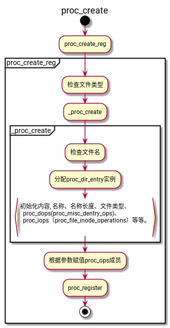

linux文件系统
Table of Contents
1. 文件系统操作
1.1. 全局结构
文件系统结构的链表头
static struct file_system_type *file_systems;
struct file_system_type { /* 文件系统名称 */ const char *name; /* 挂载标志 */ int fs_flags; #define FS_REQUIRES_DEV 1 #define FS_BINARY_MOUNTDATA 2 #define FS_HAS_SUBTYPE 4 #define FS_USERNS_MOUNT 8 /* Can be mounted by userns root */ #define FS_DISALLOW_NOTIFY_PERM 16 /* Disable fanotify permission events */ #define FS_RENAME_DOES_D_MOVE 32768 /* FS will handle d_move() during rename() internally. */ int (*init_fs_context)(struct fs_context *); const struct fs_parameter_spec *parameters; /* 此文件文件系统的新实例被挂载是调用 */ struct dentry *(*mount) (struct file_system_type *, int, const char *, void *); /* 此文件系统的实例被关闭时调用 */ void (*kill_sb) (struct super_block *); struct module *owner; /* 连接所有已注册文件系统的指针 */ struct file_system_type * next; /* 相同文件系统的超级块结构 */ struct hlist_head fs_supers; //...... };
1.2. 注册
注册文件系统通过调用 register_filesystem 将新的文件系统加入 file_systems 链表中.
int register_filesystem(struct file_system_type * fs) { int res = 0; struct file_system_type ** p; //...... write_lock(&file_systems_lock); /* 查找文件系统中是否已经注册过, 如果没有, 返回链表末尾文件系统的next指针 */ p = find_filesystem(fs->name, strlen(fs->name)); if (*p) res = -EBUSY; else *p = fs; //将新文件系统串入链表 write_unlock(&file_systems_lock); return res; }
2. proc文件系统
proc文件系统是一个虚拟文件系统，通过proc文件系统，可以获取有关内核子系统的信息。sysctl机制与此文件系统密切相关。proc文件系统提供了一种接口，使得可以简cat或者echo等程序来修改内核参数。通常proc文件系统装载在/proc路径（当然也可以装载到其他位置）。
2.1. /proc内容
其内容大致分为以下几类：
- 内存管理；
- 系统进程的特征数据；
- 文件系统；
- 设备驱动程序；
- 系统总线；
- 电源管理；
- 终端；
- 系统控制参数；
2.1.1. 特定于进程的数据
/proc目录中有很多用进程PID命名的文件夹，文件夹中的文件包含了相应进程的数据。
- environ
- 进程的环境变量
- maps
- 以文本形式列出了进程本身和进程使用库的内存映射。
- status
- 包含了有关进程状态的一般信息。UID/GID、内存分配、进程能力、各个信号掩码的状态等等。
- stat和statm
- 以一连串数字的形式提供了进程及其内存消耗的更多状态信息。
- fd子目录
- 包含文件打开的文件描述符，目录中的文件都是符号链接，指向文件描述符对应的文件位置。
- cwd
- 进程的当前工作目录。
- exe
- 进程的二进制代码文件路径。
- root
- 进程的根目录。
2.1.2. 一般性的系统信息
/proc目录中还有一些文件，包含了一般性的系统信息。
- iomem
提供了用来和设备通信的内存地址的有关信息。
sudo cat /proc/iomem 00000000-00000fff : Reserved 00001000-0009ffff : System RAM 000a0000-000fffff : Reserved 000a0000-000bffff : PCI Bus 0000:00 000c0000-000dffff : PCI Bus 0000:00 000c0000-000cffff : Video ROM 000f0000-000fffff : System ROM 00100000-09e01fff : System RAM 09e02000-09ffffff : Reserved 0a000000-0a1fffff : System RAM 0a200000-0a20bfff : ACPI Non-volatile Storage 0a20c000-0affffff : System RAM 0b000000-0b01ffff : Reserved 0b020000-d76aafff : System RAM d76ab000-d76effff : Reserved d76f0000-d9e86fff : System RAM d9e87000-d9e87fff : Reserved d9e88000-db53ffff : System RAM ......- ioports
提供了用来和设备通信端口的有关信息。
$ sudo cat /proc/ioports 0000-03af : PCI Bus 0000:00 0000-001f : dma1 0020-0021 : pic1 0040-0043 : timer0 0050-0053 : timer1 0060-0060 : keyboard 0061-0061 : PNP0800:00 0064-0064 : keyboard 0070-0071 : rtc0 0080-008f : dma page reg 00a0-00a1 : pic2 00c0-00df : dma2 00f0-00ff : fpu 03b0-03df : PCI Bus 0000:00 03e0-0cf7 : PCI Bus 0000:00 03f8-03ff : serial 040b-040b : pnp 00:07 04d0-04d1 : pnp 00:07 04d6-04d6 : pnp 00:07 0800-089f : pnp 00:07 0800-0803 : ACPI PM1a_EVT_BLK 0804-0805 : ACPI PM1a_CNT_BLK 0808-080b : ACPI PM_TMR 0810-0815 : ACPI CPU throttle 0820-0827 : ACPI GPE0_BLK ......- buddyinfo
- 伙伴系统的分配情况。
- slabinfo
- slab分配器的使用情况。
- meminfo
- 给出了一般性的内存使用情况，分为高端内存、低端内存、空闲内存、已分配区域、共享区域、交换和回写内存，等等。
- vmstat
- 内存管理的其他特征信息，包括在内存管理的各个子系统中的内存页的数目。
- kallsyms
- 用于支持内核代码调试，给出了内核全局变量和函数在内存中的地址。
- kcore
- 是一个动态的内核文件，也用于支持内核代码调试。给出了运行中内核的的所有数据，即主内存中的全部内容。该文件类似用户进程的coredump文件，可以用调试器调试该文件，来查看系统的当前状态信息。
- interrupts
- 保存了系统操作期间引发中断的信息。包括中断数目、中断号、相关的设备名称和驱动程序等。
- loadavg
- 给出了系统过去60秒、5分钟、15分钟的平均系统负荷。
- uptime
- 给出了系统运行时间。
2.1.3. 网络信息
/proc/net子目录提供了内核的各种网络选项有关的数据。其中保存了各种协议和设备数据。
- tcp和udp
- ipv4的tcp和udp的各种统计数据。
- tcp6和udp6
- ipv6的tcp和udp的各种统计数据。
- unix
- UNIX套接子统计数据。
- arp
- 用于反向arp解析的arp表。
- dev
- 保存了通过系统网络接口传输的数据量的统计数据（包括环回）。可以用此来检查网络传输的质量，因为其中包含了传输失败和丢弃的数据包，以及冲突的数据。
某些网络驱动程序在/proc/net下提供了额外的子目录，提供了关于硬件的详细信息。
2.1.4. 系统控制参数
用于动态地检查和修改内核行为的系统控制参数。通过sysctl系统调用也能修改这些参数，但是需要的工作量更多，因 为首先必须写一个程序，来支持通过系统调用接口与内核通信。sysctl机制已经标记为废弃（每次调用sysctl时，内核将输出一个警告信息），计划在未来的某个时候去掉。
sysctl系统调用实际上是不必要的，因为通过/proc接口对内核数据的操作已经简单到了极点。
sysctl参数由一个独立的子目录/proc/sys管理，它进一步划分为各种子目录，对应于内核的各个子系统。目录中的文件提供了对应内核子系统的特征数据，这些文件不仅可以读，还可以通过普通文件的操作写入新值，
2.2. 数据结构
2.2.1. proc数据项的表示
proc中的每个数据项都由proc_dir_entry的一个实例描述，其定义如下：
struct proc_dir_entry { atomic_t in_use; refcount_t refcnt; struct list_head pde_openers; /* who did ->open, but not ->release */ /* protects ->pde_openers and all struct pde_opener instances */ spinlock_t pde_unload_lock; struct completion *pde_unload_completion; const struct inode_operations *proc_iops; union { /* */ const struct proc_ops *proc_ops; /* */ const struct file_operations *proc_dir_ops; }; const struct dentry_operations *proc_dops; union { const struct seq_operations *seq_ops; int (*single_show)(struct seq_file *, void *); }; proc_write_t write; void *data;nnn unsigned int state_size; /* 文件的inode编号 */ unsigned int low_ino; /* 目录中的子目录或者符号链接的数量 */ nlink_t nlink; kuid_t uid; kgid_t gid; loff_t size; /* 指向父目录的指针 */ struct proc_dir_entry *parent; /* 子目录树，如果位文件则为空 */ struct rb_root subdir; /* 用来构建子目录数的父节点 */ struct rb_node subdir_node; /* 数据项的文件名*/ char *name; /* 文件权限 */ umode_t mode; u8 flags; /* 文件名长度 */ u8 namelen; char inline_name[]; } __randomize_layout;
2.2.2. proc inode
proc_inode结构用来支持以面向inode的方式来查看proc文件系统的数据项。
union proc_op { /* 用于获得特定于进程的信息 */ int (*proc_get_link)(struct dentry *, struct path *); int (*proc_show)(struct seq_file *m, struct pid_namespace *ns, struct pid *pid, struct task_struct *task); const char *lsm; }; struct proc_inode { /* 指向进程的pid实例*/ struct pid *pid; /* 记录了文件描述符,对应于/proc/<pid>/fd/目录下的某个文件 */ unsigned int fd; union proc_op op; struct proc_dir_entry *pde; struct ctl_table_header *sysctl; struct ctl_table *sysctl_entry; struct hlist_node sibling_inodes; const struct proc_ns_operations *ns_ops; struct inode vfs_inode; } __randomize_layout;
该结构用来将特定于proc的数据与VFS层的inode数据关联起来。pde是一个指针，指向关联到proc数据项的proc_dir_entry实例，在结构末尾是一个inode。
如果inode（vfs_inode）结构实例是关联到了proc文件系统的，则通过inode使用container_of机制来获得proc_inode。内核为此定义了以下宏定义：
static inline struct proc_inode *PROC_I(const struct inode *inode) { return container_of(inode, struct proc_inode, vfs_inode); }
2.3. 初始化

上述过程中还会使用proc_mkdir创建一些目录，之后会使用这些目录。proc_mkdir函数注册一个新的子目录，并返回对应的proc_dir_entry实例。
2.4. proc文件系统的装载
从用户空间的角度来看，/proc的装载几乎与非虚拟文件系统类似。唯一的区别是，将一个适宜的关键字（通常是proc或none）指定为数据源，而不使用设备文件：
# mount -t proc proc /proc
内核添加文件系统时，会扫描一个链表(file_system)，以查找和该文件系统相关联的file_system_type实例。proc文件系统的结构如下：
static struct file_system_type proc_fs_type = { .name = "proc", /* 初始化proc文件系统上下文 */ .init_fs_context = proc_init_fs_context, .parameters = proc_fs_parameters, .kill_sb = proc_kill_sb, .fs_flags = FS_USERNS_MOUNT | FS_DISALLOW_NOTIFY_PERM, };
proc_init_fs_context函数主要初始化文件系统上下文，该上下文用来保存创建或者重新初始化超级块使用的参数。其中，将。
static const struct dentry_operations proc_misc_dentry_ops = { .d_revalidate = proc_misc_d_revalidate, .d_delete = proc_misc_d_delete, }; static const struct inode_operations proc_file_inode_operations = { .setattr = proc_notify_change, }; static const struct fs_context_operations proc_fs_context_ops = { .free = proc_fs_context_free, .parse_param = proc_parse_param, .get_tree = proc_get_tree, .reconfigure = proc_reconfigure, }; /* proc目录的操作函数 */ static const struct file_operations proc_root_operations = { .read = generic_read_dir, .iterate_shared = proc_root_readdir, .llseek = generic_file_llseek, }; /* proc根目录基本没什么操作 */ static const struct inode_operations proc_root_inode_operations = { .lookup = proc_root_lookup, .getattr = proc_root_getattr, }; struct proc_dir_entry proc_root = { .low_ino = PROC_ROOT_INO, .namelen = 5, .mode = S_IFDIR | S_IRUGO | S_IXUGO, .nlink = 2, .refcnt = REFCOUNT_INIT(1), .proc_iops = &proc_root_inode_operations, .proc_dir_ops = &proc_root_operations, .parent = &proc_root, .subdir = RB_ROOT, .name = "/proc", };
2.5. 管理/proc数据项
2.5.1. 数据项的创建和注册
struct proc_dir_entry *proc_create(const char *name, umode_t mode, struct proc_dir_entry *parent, const struct proc_ops *proc_ops)
此函数由两个主要功能，首先通过proc_create_reg创建一个proc_dir_entry的一个实例，并填充所有需要的信息。然后调用proc_register将其注册到proc的数据结构，使得能够在文件系统中看到该数据项。

2.5.2. 查找proc数据项
用户空间应用程序访问proc文件时，就像是访问常规文件系统中的普通文件一样。换句话说，搜索proc数据项时所经由的代码路径，与VFS例程是相同的。VFS查找过程最终调用inode_operations的lookup函数指针，根据文件名的各个路径分量，来确定文件名所对应的inode。
对proc数据项的搜索从proc文件系统的装载点开始，通常是/proc。在proc文件系统根目录的file_operations（proc_dir_ops字段）实例中，其lookup指针指向了proc_root_lookup函数。
proc_root_lookup proc_pid_lookup proc_lookup proc_lookup_de
此例程会区分两部分不同类型的proc数据项。数据项有可能是特定于进程的目录中的文件（/proc/<pid>/），也有可能是驱动或者子系统动态注册的文件。内核首先调用proc_pid_lookup查找特定与进程的文件，若没找到再调用proc_lookup查找常规数据项。
2.6. 读取和写入信息
内核使用保存在proc_file_operations中的操作来读写常规proc数据项的内容。该结构中的函数指针，所指向的目标函数如下：
static const struct file_operations proc_reg_file_ops = { .llseek = proc_reg_llseek, .read = proc_reg_read, .write = proc_reg_write, .poll = proc_reg_poll, .unlocked_ioctl = proc_reg_unlocked_ioctl, .mmap = proc_reg_mmap, .get_unmapped_area = proc_reg_get_unmapped_area, .open = proc_reg_open, .release = proc_reg_release, }; static const struct file_operations proc_iter_file_ops = { .llseek = proc_reg_llseek, .read_iter = proc_reg_read_iter, .write = proc_reg_write, .splice_read = generic_file_splice_read, .poll = proc_reg_poll, .unlocked_ioctl = proc_reg_unlocked_ioctl, .mmap = proc_reg_mmap, .get_unmapped_area = proc_reg_get_unmapped_area, .open = proc_reg_open, .release = proc_reg_release, };
2.7. 查询进程页表
是由内和提供的接口集合, 允许用户空间应用通过读取该文件来查询页表和冲定位信息.
- /proc/pid/pagemap
- 此文件允许用户程序查询虚拟地址映射的物理页帧, 每个虚拟页面都会对应其中的一个64-bit的值.
- 0-54 页帧号(如果存在)
- 0-4 交换类型(如果已交换)
- 5-54 交换偏移(如果已交换)
- 55 页目录 Soft-dirty标志位(跟踪进程是否写过此页)
- 56 专有映射页
- 57-60 空闲
- 61 文件页或者匿名共享页
- 62 交换页
- 63 页是否存在
- /proc/kpagecount
- 包含了每个页面的映射次数, 通过PFN索引
- /proc/kpageflags
- 包含了每个页面的flag集合(64bit), 通过PFN索引
- /proc/kpagecgroup
- 包含了每个页要加载的内存cgroup的inode编号, 通过PFN索引
/proc/self/pagemap
3. 命令
3.1. mount
通过linux专有的虚拟文件 /proc/mounts， 可以查看当前已挂载的文件系统列表。 随着引入了前述的每进程命名空间特性， 每个进程都拥有一个 /proc/PID/mounts文件，其中会列出组成进程挂载空间的挂载点， 而 /proc/mounts 只是指向/proc/self/mount的符号链接。
mount 和 umount命令会自动维护/etc/mtab 文件， 但是系统调用 mount和umount并不更新/etc/mtab文件。
/etc/fstab 包含了对系统支持的所有文件系统的描述。
/proc/mount 格式 （1. 已挂载设备名 2.设备的挂载点 3.文件系统类型 4.挂载标志 5.数字 控制fs备份相关，由/etc/fstab使用 6.数字 系统引导时 用于控制fsck对文件系统的检查顺序）
#include <sys/mount.h> //将source指定设备包含的文件系统 挂载到由target指定的目录下。 //fstype是一字符串， 用来标识设备所含文件系统的类型， 例如ext4 //mountflags为一位掩码。 int mount(const char *source, const char *target, const char *filesystemtype, unsigned long mountflags, const void *data);
| 标记 | 用途 |
|---|---|
| MS_BIND | 建立绑定挂载 |
| MS_DIRSYNC | 同步更新路径 |
| MS_MANDBLOCK | 允许强制锁定文件 |
| MS_MOVE | 以原子操作将挂载点移到新位置 |
| MS_NOATIME | 不更新文件的最后访问时间 |
| MS_NODEV | 不允许访问设备 |
| MS_NODIRATIME | 不更新目录的最后访问时间 |
| MS_NOEXEC | 不允许程序执行 |
| MS_NOSUID | 禁用set-user-ID和set-group-ID程序 |
| MS_RDONLY | 以只读方式挂载，不能修改创建文件 |
| MS_REC | 递归挂载 |
| MS_RELATIME | 只有当最后访问时间早于最后修改时间或最后状态变更时间时，才对前者进行更新 |
| MS_REMOUNT | 使用新的mountflags和data重新挂载 |
| MS_STRICTIME | 总是更新最后访问时间 |
| MS_SYNCHRONOUS | 使得所有文件和目录同步更新 |
#+begin_src c #include <sys/mount.h> //无法卸载正在使用中的文件系统 int umount(const char *target); //MNT_DETACH 执行lazy卸载， 允许已经使用的进程继续使用， 不允许新进程使用，当没有进程使用时卸载 //MNT_EXPIRE 可以实现在某段时间内未使用的文件系统，至少 需要两次调用，才能卸载。 //MNT_FORCE 强制卸载 //UNOUNT_NOFOLLOW 若target为符号链接， 不对其进行解引用。 int umount2(const char *target, int flags); #end_src
高级挂载特性
- 在多个挂载点挂载文件系统， 一个挂载点下的改变 其他挂载点可见。
- 多次挂载同一个挂载点。 每次挂载会隐藏之前的挂载点下的目录子树。
- 基于每次挂载的挂载标志
- 绑定挂载（MS_BIND）是指在文件系统目录层级的另一处挂载目录或文件。 这将导致文件或目录在两处同时可见。 绑定挂载类似于硬链接，但是存在差异
绑定挂载可以跨越多个文件系统挂载点，布局与chroot监禁区 可针对目录执行绑定挂载
- 递归绑定挂载 （MS_BIND | MS_REC）,会将源目录下的子挂载复制到target之下。
3.1.1. bind
3.1.2. move
3.1.3. rbind
3.1.4. make-shared
**